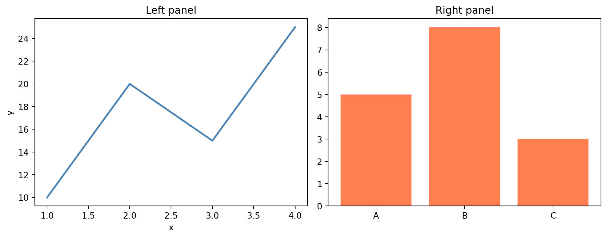
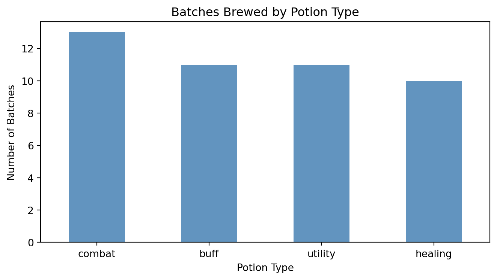
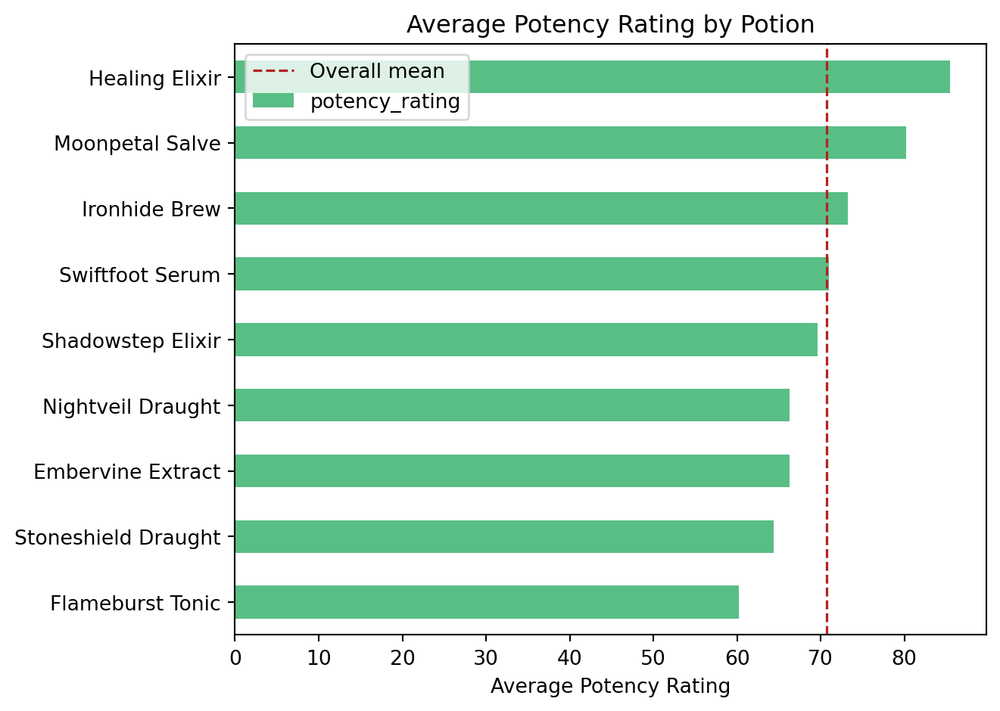
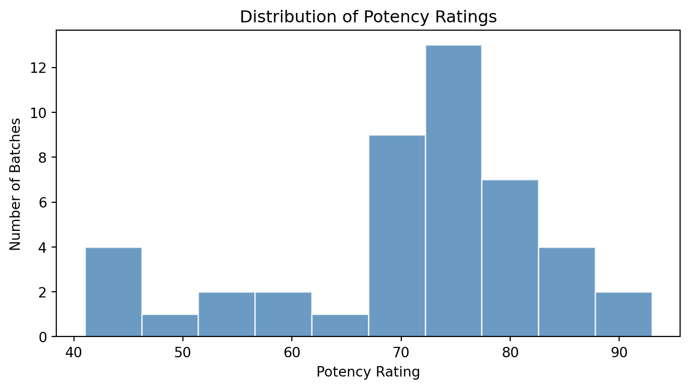
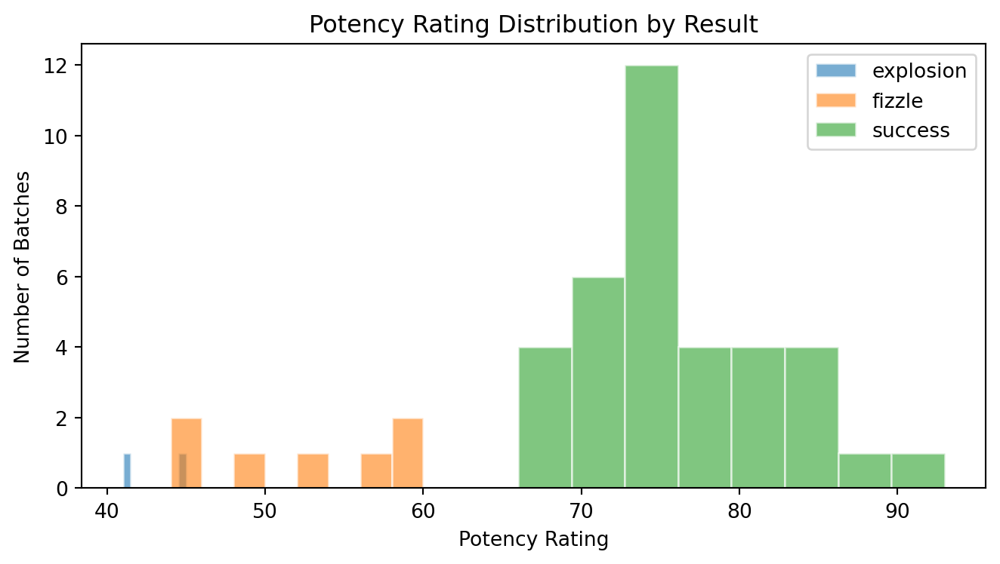
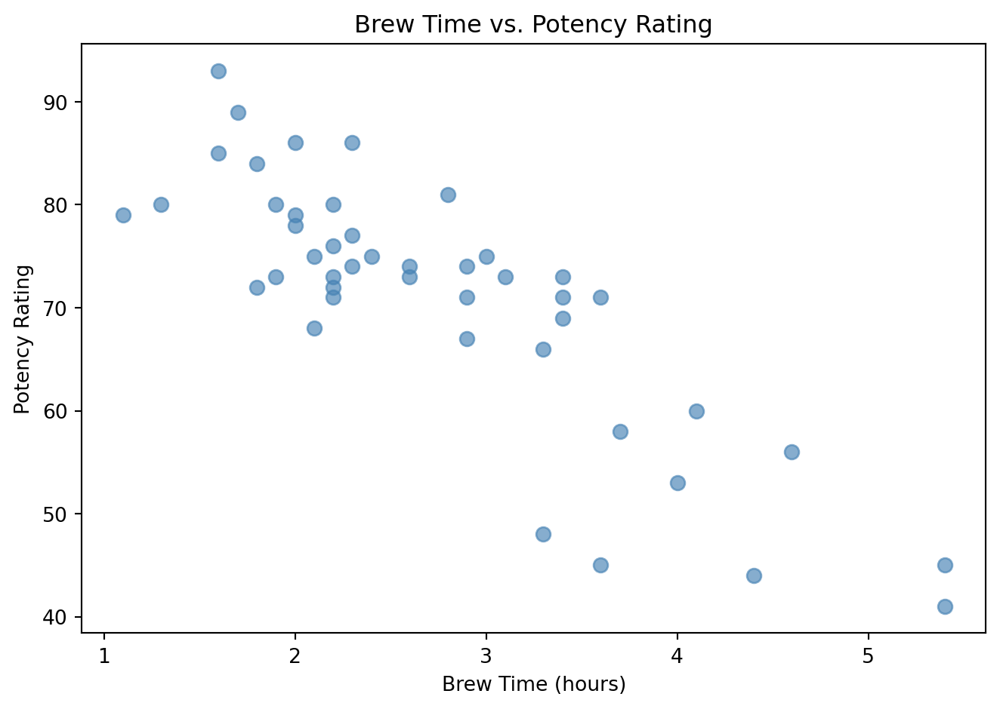
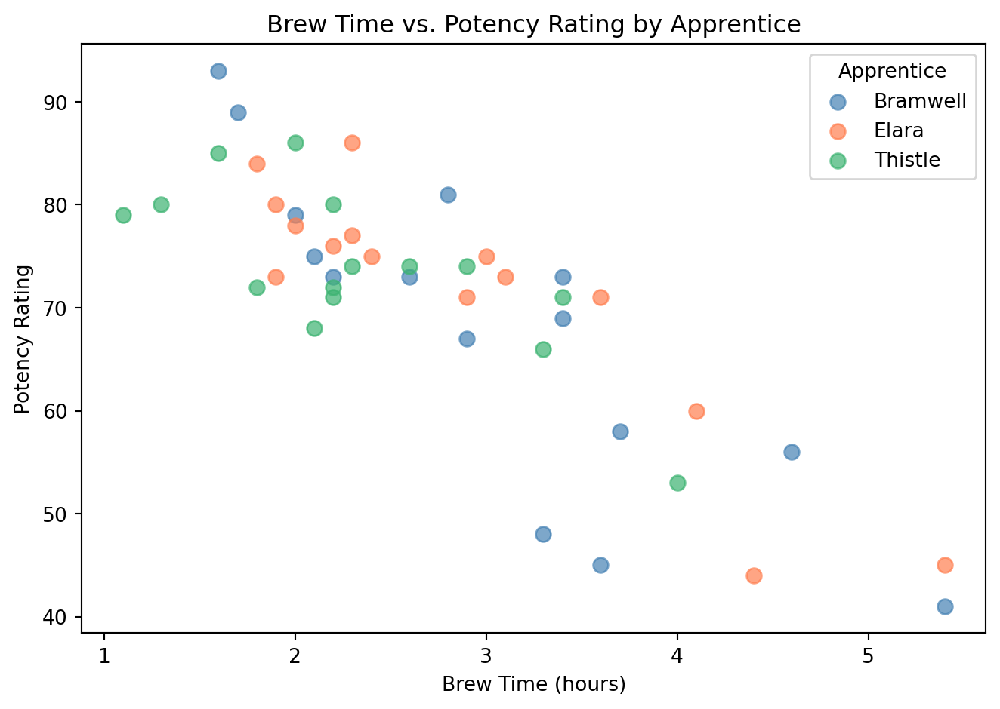
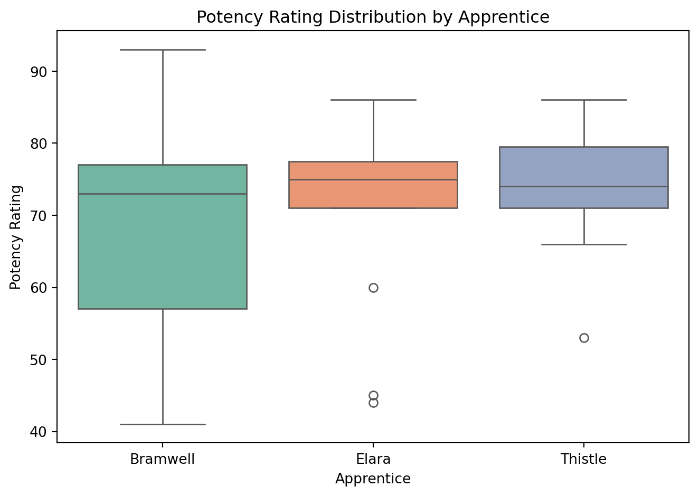
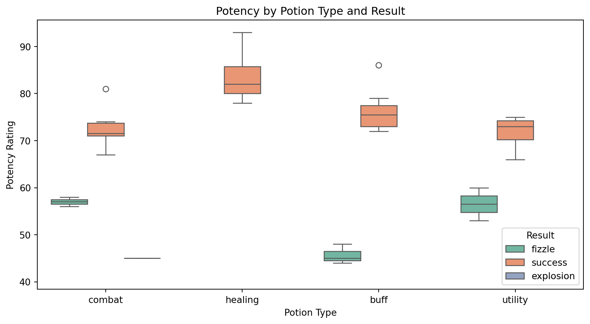
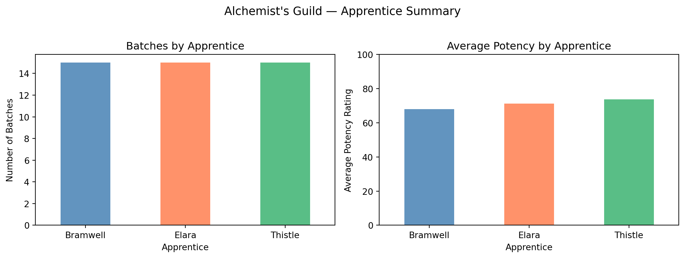

import pandas as pd
import matplotlib.pyplot as plt
import seaborn as sns
%matplotlib inlineWeek 14 Demo: Plotting and Visualization
How to Work Through This Demo
Before every code block, read the setup text that explains what the code is about to do. After running the cell, read the explanation that follows to understand what the output shows. Run cells in order from top to bottom. Earlier cells create variables and figures that later cells depend on.
If any cell produces an error, check that you ran all the cells above it first. Use Restart Kernel and Run All to reset if needed.
Introduction
The analyses you have built in this course produce tabular results: filtered DataFrames, grouped summaries, sorted rankings. Tabular output is precise, but it requires a reader to scan values and draw comparisons mentally. Visualization converts that same data into a spatial representation where patterns are read directly from position, height, or color rather than inferred from numbers. A histogram shows a distribution; a bar chart shows a ranking; a scatter plot shows the relationship between two variables.
Chapter 9 introduces the tools Python provides for producing that visual output. The primary library is matplotlib, which gives you direct control over every element of a figure. pandas provides a higher-level interface built on top of matplotlib that lets you create common plot types directly from a DataFrame with a single method call. seaborn sits a level higher still and makes statistical visualizations that would require many matplotlib steps easy to produce.
This demo uses the Alchemist’s Guild brewing log from Week 2. The Guild’s three apprentices (Bramwell, Elara, and Thistle) have been recording their batches for two weeks. The Guild Archivists want a visual summary of apprentice performance, potion type distribution, and the relationship between brewing conditions and outcome. You will build those visualizations here.
The demo follows this structure:
- Load and clean the data
- Understand the matplotlib figure and axes model
- Bar plots with pandas
- Histograms with pandas
- Scatter plots with pandas
- Box plots with seaborn
- Saving a figure
Setup
Download brewing_log.csv from the course page and place it in your week14 folder alongside this notebook.
Before running any cells, confirm that matplotlib and seaborn are installed in your environment. If either import fails with a ModuleNotFoundError, run the following in your terminal, then restart your kernel:
pip install matplotlib seabornUnderstanding the imports:
matplotlib.pyplot is the standard entry point for matplotlib. The convention import matplotlib.pyplot as plt is universal; you will see it in virtually every Python data analysis project.
seaborn is imported as sns by convention. It is built on top of matplotlib and shares the same figure and axes system, so the two libraries work together in the same notebook without any special configuration.
%matplotlib inline is a Jupyter magic command that tells the notebook to display plots inline, directly beneath the cell that creates them, rather than in a separate window. Run this once at the top of the notebook.
Part 1: Load and Clean the Data
Load the brewing log
The brewing log was introduced in the Week 2 demo. It contains intentional data quality problems that were used as practice for error handling. Before plotting, those problems need to be resolved so they do not corrupt the analysis.
raw = pd.read_csv("brewing_log.csv", on_bad_lines="skip")
print(f"Shape: {raw.shape}")
print(raw.dtypes)
print()
print(raw.head())Shape: (47, 8)
date object
apprentice object
potion_name object
potion_type object
ingredients_used object
brew_time_hours float64
potency_rating object
result object
dtype: object
date apprentice potion_name potion_type ingredients_used \
0 2026-02-02 Bramwell Flameburst Tonic combat 7
1 2026-02-02 Bramwell Healing Elixir healing 5
2 2026-02-02 Elara Moonpetal Salve healing 5
3 2026-02-02 Elara Stoneshield Draught buff 4
4 2026-02-02 Elara Swiftfoot Serum buff 3
brew_time_hours potency_rating result
0 4.6 56 fizzle
1 1.7 89 success
2 2.0 78 success
3 4.4 44 fizzle
4 1.9 73 success Understanding the output:
The on_bad_lines="skip" parameter tells pandas to silently drop any row where the number of fields does not match the header. The brewing log has one such row: a line with an extra field that would otherwise cause a parse error. After skipping it, the DataFrame has 47 rows and 8 columns.
Notice that ingredients_used and potency_rating are both read as object (string) rather than numeric. This is because at least one bad value in each column prevented pandas from inferring a numeric type. Those rows need to be identified and removed before the columns can be converted.
Inspect and drop bad rows
Use pd.to_numeric() with errors="coerce" to identify which rows contain non-numeric values in the two affected columns.
# Identify rows where ingredients_used or potency_rating are not numeric
bad_mask = (
pd.to_numeric(raw["ingredients_used"], errors="coerce").isna() |
pd.to_numeric(raw["potency_rating"], errors="coerce").isna()
)
print(f"Bad rows: {bad_mask.sum()}")
print(raw[bad_mask])Bad rows: 2
date apprentice potion_name potion_type \
16 bad row with no commas NaN NaN NaN
26 2026-02-10 Bramwell Flameburst Tonic combat
ingredients_used brew_time_hours potency_rating result
16 NaN NaN NaN NaN
26 UNKNOWN 3.5 potency_error fizzle Understanding the output:
pd.to_numeric(..., errors="coerce") attempts to convert each value to a number. Anything that cannot be converted becomes NaN. The mask identifies rows where either conversion failed.
Two rows have problems: one is a completely malformed line from the raw file where every field except the first is NaN, and one where ingredients_used is "UNKNOWN" and potency_rating is "potency_error". Both are removed below.
log = raw[~bad_mask].copy()
log["ingredients_used"] = pd.to_numeric(log["ingredients_used"])
log["potency_rating"] = pd.to_numeric(log["potency_rating"])
log = log.reset_index(drop=True)
print(f"Clean shape: {log.shape}")
print(log.dtypes)Clean shape: (45, 8)
date object
apprentice object
potion_name object
potion_type object
ingredients_used int64
brew_time_hours float64
potency_rating int64
result object
dtype: objectUnderstanding the output:
After removing the two bad rows and converting types, ingredients_used is int64 and potency_rating is int64. The clean DataFrame has 45 rows. All subsequent analysis uses log.
Part 2: The matplotlib Figure and Axes Model
The two core objects in matplotlib are the Figure and the Axes.
A Figure is the outermost container (the entire canvas). A Figure contains one or more Axes objects. Each Axes is one individual plot: its own x-axis, y-axis, title, and data. When you call plt.subplots(), you get back both the Figure and one or more Axes objects.
fig, axes = plt.subplots(1, 2, figsize=(10, 4))
axes[0].plot([1, 2, 3, 4], [10, 20, 15, 25], color="steelblue", linewidth=2)
axes[0].set_title("Left panel")
axes[0].set_xlabel("x")
axes[0].set_ylabel("y")
axes[1].bar(["A", "B", "C"], [5, 8, 3], color="coral")
axes[1].set_title("Right panel")
plt.tight_layout()
plt.show()
Understanding the figure and axes model:
plt.subplots(1, 2) creates a Figure with a 1-row, 2-column grid of Axes. The figsize=(10, 4) argument sets the width and height in inches.
axes is an array with two elements: axes[0] is the left panel and axes[1] is the right panel. Each panel is controlled independently using its own methods: set_title(), set_xlabel(), set_ylabel().
This object-oriented approach of calling methods on individual Axes objects is the preferred way to work with matplotlib when you have more than one panel. pandas and seaborn both accept an ax= parameter that lets you direct their output to a specific Axes in a layout you have already set up.
plt.tight_layout() automatically adjusts spacing between subplots so titles and labels do not overlap. plt.show() renders the figure. In a Jupyter notebook with %matplotlib inline active, calling plt.show() is optional, but including it ensures each cell displays exactly one figure and prevents plots from accumulating across cells unexpectedly.
Part 3: Bar Plots
Bar plots are the right choice when you are comparing a numeric value across categories. The two most common questions in the brewing log (how many batches were brewed per potion type, and which potion tends to be most potent) are both category comparisons.
Batch counts by potion type
Start by counting how many batches fall into each potion type, then plot those counts as a vertical bar chart.
type_counts = log["potion_type"].value_counts()
print(type_counts)potion_type
combat 13
buff 11
utility 11
healing 10
Name: count, dtype: int64fig, ax = plt.subplots(figsize=(7, 4))
type_counts.plot.bar(ax=ax, color="steelblue", alpha=0.85)
ax.set_title("Batches Brewed by Potion Type")
ax.set_xlabel("Potion Type")
ax.set_ylabel("Number of Batches")
ax.tick_params(axis="x", rotation=0)
plt.tight_layout()
plt.show()
Understanding the bar plot:
value_counts() produces a Series with potion types as the index and counts as the values. Calling .plot.bar() on that Series creates a vertical bar chart where the index becomes the x-axis labels and the values become the bar heights.
The ax=ax argument passes the Axes object into the plot method. The left side (ax=) is the parameter name the method expects; the right side (ax) is the variable you created with plt.subplots(). They share the same name by convention, which can look like a typo but is not. This is the standard pattern: create a Figure and Axes first, then pass ax= to the plot method. It keeps figure setup (size, layout) separate from the plot command and makes it straightforward to place multiple plots in the same figure.
ax.tick_params(axis="x", rotation=0) overrides the default 90-degree label rotation. For short labels like these, horizontal labels are easier to read.
Average potency by potion name
Now compute the average potency for each potion and display the ranking as a horizontal bar chart, which makes the ordering easier to read when there are many category labels.
avg_potency = log.groupby("potion_name")["potency_rating"].mean().sort_values()
print(avg_potency)potion_name
Flameburst Tonic 60.250000
Stoneshield Draught 64.400000
Embervine Extract 66.250000
Nightveil Draught 66.285714
Shadowstep Elixir 69.600000
Swiftfoot Serum 71.000000
Ironhide Brew 73.250000
Moonpetal Salve 80.250000
Healing Elixir 85.500000
Name: potency_rating, dtype: float64fig, ax = plt.subplots(figsize=(7, 5))
avg_potency.plot.barh(ax=ax, color="mediumseagreen", alpha=0.85)
ax.set_title("Average Potency Rating by Potion")
ax.set_xlabel("Average Potency Rating")
ax.set_ylabel("")
ax.axvline(x=avg_potency.mean(), color="firebrick", linestyle="--", linewidth=1.2, label="Overall mean")
ax.legend()
plt.tight_layout()
plt.show()
Understanding the horizontal bar plot:
plot.barh() creates a horizontal bar chart. Horizontal bars work well when category labels are long; they read left to right without crowding. Sorting ascending before plotting (sort_values()) puts the smallest values at the bottom, so the highest-potency potions appear at the top of the chart.
ax.axvline() draws a vertical reference line at the overall mean potency. This is a matplotlib axes method, not a pandas plot method. Because both pandas and matplotlib are drawing on the same ax object, you can call matplotlib ax methods directly after any pandas plot call and they will add to the existing figure.
Part 4: Histograms
A histogram shows how a numeric variable is distributed across its range. Bar plots show category comparisons; histograms show the distribution of the data.
Distribution of potency ratings
Plot all 45 potency ratings as a histogram to see how the values are distributed across their range.
fig, ax = plt.subplots(figsize=(7, 4))
log["potency_rating"].plot.hist(ax=ax, bins=10, color="steelblue", alpha=0.8, edgecolor="white")
ax.set_title("Distribution of Potency Ratings")
ax.set_xlabel("Potency Rating")
ax.set_ylabel("Number of Batches")
plt.tight_layout()
plt.show()
Understanding the histogram:
plot.hist() divides the range of the data into equal-width intervals (bins) and draws a bar for each bin whose height represents how many values fall in that interval.
The bins=10 argument controls how many intervals the data is divided into. More bins produce a finer-grained view; fewer bins produce a smoother picture. There is no single correct number of bins; it depends on how much data you have and what you are trying to show. Try changing bins=10 to bins=5 or bins=20 and observe how the shape changes.
edgecolor="white" adds thin white lines between bars to make individual bins easier to distinguish.
Potency ratings by result
Draw one histogram per result category on the same axes to compare how potency is distributed across successes, fizzles, and explosions.
fig, ax = plt.subplots(figsize=(7, 4))
for result, group in log.groupby("result"):
group["potency_rating"].plot.hist(ax=ax, bins=8, alpha=0.6, label=result, edgecolor="white")
ax.set_title("Potency Rating Distribution by Result")
ax.set_xlabel("Potency Rating")
ax.set_ylabel("Number of Batches")
ax.legend()
plt.tight_layout()
plt.show()
Understanding overlapping histograms:
This uses a groupby loop to draw one histogram per result category on the same Axes. The alpha=0.6 makes each histogram partially transparent so the overlap between distributions is visible.
The pattern of looping over groups and drawing each onto the same ax works for any plot type. Because all three histograms share the same ax, matplotlib automatically assigns different colors. Calling ax.legend() uses the label=result argument from each plot.hist() call to build the legend.
Part 5: Scatter Plots
A scatter plot shows the relationship between two numeric variables. Each row in the DataFrame becomes one point positioned by its values on the x- and y-axes.
Brew time vs. potency rating
Plot every batch as a point with brew time on the x-axis and potency on the y-axis to see whether longer brewing times produce higher potency.
fig, ax = plt.subplots(figsize=(7, 5))
log.plot.scatter(
x="brew_time_hours",
y="potency_rating",
ax=ax,
alpha=0.65,
color="steelblue",
s=50
)
ax.set_title("Brew Time vs. Potency Rating")
ax.set_xlabel("Brew Time (hours)")
ax.set_ylabel("Potency Rating")
plt.tight_layout()
plt.show()
Understanding the scatter plot:
plot.scatter() requires x= and y= column names. Each row in the DataFrame becomes one point. alpha=0.65 makes points semi-transparent, which helps when points overlap in a dense region.
Read the scatter plot by looking for a directional trend. Points drifting upward from left to right indicate a positive relationship between brew time and potency. A flat or randomly scattered cloud indicates no relationship between the two variables.
Color-coding by apprentice
Repeat the same scatter plot, this time assigning a distinct color to each apprentice to see whether the brew time and potency pattern differs by person.
colors = {"Bramwell": "steelblue", "Elara": "coral", "Thistle": "mediumseagreen"}
fig, ax = plt.subplots(figsize=(7, 5))
for apprentice, group in log.groupby("apprentice"):
group.plot.scatter(
x="brew_time_hours",
y="potency_rating",
ax=ax,
alpha=0.7,
color=colors[apprentice],
label=apprentice,
s=55
)
ax.set_title("Brew Time vs. Potency Rating by Apprentice")
ax.set_xlabel("Brew Time (hours)")
ax.set_ylabel("Potency Rating")
ax.legend(title="Apprentice")
plt.tight_layout()
plt.show()
Understanding the grouped scatter plot:
The same groupby-loop pattern from the histogram section applies here. Each apprentice gets their own color from the colors dictionary. Because all three groups draw onto the same ax, the legend assembles from the label= arguments automatically.
This is a common pattern in exploratory analysis: start with all data in one color, then add a grouping variable to see whether the relationship between the two variables differs across subgroups.
Part 6: Box Plots with seaborn
A box plot summarizes the distribution of a numeric variable with five statistics: the minimum, first quartile (Q1), median, third quartile (Q3), and maximum. Points that fall more than 1.5 times the interquartile range beyond the box boundaries (below Q1 or above Q3) are shown as individual outlier points. Box plots are particularly useful for comparing distributions across groups.
Potency distribution by apprentice
Use seaborn’s boxplot to summarize the full potency distribution for each apprentice side by side, showing the median, spread, and any outliers in a single view.
fig, ax = plt.subplots(figsize=(7, 5))
sns.boxplot(data=log, x="apprentice", y="potency_rating", hue="apprentice", legend=False, ax=ax, palette="Set2")
ax.set_title("Potency Rating Distribution by Apprentice")
ax.set_xlabel("Apprentice")
ax.set_ylabel("Potency Rating")
plt.tight_layout()
plt.show()
Understanding the seaborn box plot:
sns.boxplot() takes a DataFrame as data=, a categorical column as x=, and a numeric column as y=. It groups the data, computes the box plot statistics for each group, and draws them side by side.
The interface is similar to pandas plot methods, but notice that seaborn takes data=, x=, and y= as column name strings rather than requiring you to extract Series first. The palette= argument assigns colors from a named color set.
seaborn uses the same ax= parameter as pandas. Because sns.boxplot() draws onto the ax created by plt.subplots(), you can use the same ax.set_title(), ax.set_xlabel(), and ax.set_ylabel() calls to customize it.
Potency by potion type and result
Add a second grouping variable to the box plot to compare potency distributions across both potion type and brew result at the same time.
fig, ax = plt.subplots(figsize=(9, 5))
sns.boxplot(
data=log,
x="potion_type",
y="potency_rating",
hue="result",
ax=ax,
palette="Set2"
)
ax.set_title("Potency by Potion Type and Result")
ax.set_xlabel("Potion Type")
ax.set_ylabel("Potency Rating")
ax.legend(title="Result", loc="lower right")
plt.tight_layout()
plt.show()
Understanding the hue parameter:
The hue= parameter adds a second grouping variable. Each potion type now gets one box per result category (success, fizzle, explosion), colored by result. Producing this same plot with raw matplotlib would require manually grouping the data, creating separate box series, and positioning them by hand.
Notice that the potency ratings for fizzles tend to cluster lower than those for successes across most potion types. A single box plot shows the full distribution (spread, median, and outliers) for every group simultaneously, which would require scanning across multiple grouped summary tables to replicate numerically.
Part 7: Saving a Figure
Visualizations created in a notebook are not automatically saved as files. To export a figure for a report, a presentation, or a submission, use plt.savefig().
fig, axes = plt.subplots(1, 2, figsize=(11, 4))
# Left: batch counts by apprentice
apprentice_counts = log["apprentice"].value_counts()
apprentice_counts.plot.bar(ax=axes[0], color=["steelblue", "coral", "mediumseagreen"], alpha=0.85)
axes[0].set_title("Batches by Apprentice")
axes[0].set_xlabel("Apprentice")
axes[0].set_ylabel("Number of Batches")
axes[0].tick_params(axis="x", rotation=0)
# Right: average potency by apprentice
avg_by_apprentice = log.groupby("apprentice")["potency_rating"].mean()
avg_by_apprentice.plot.bar(ax=axes[1], color=["steelblue", "coral", "mediumseagreen"], alpha=0.85)
axes[1].set_title("Average Potency by Apprentice")
axes[1].set_xlabel("Apprentice")
axes[1].set_ylabel("Average Potency Rating")
axes[1].tick_params(axis="x", rotation=0)
axes[1].set_ylim(0, 100)
plt.suptitle("Alchemist's Guild — Apprentice Summary", fontsize=13, y=1.02)
plt.tight_layout()
plt.savefig("guild_summary.png", dpi=150, bbox_inches="tight")
plt.show()
print("Figure saved as guild_summary.png")
Figure saved as guild_summary.pngUnderstanding plt.savefig():
plt.savefig() must be called before plt.show(). Once plt.show() is called, matplotlib closes the figure and clears it. Calling savefig() afterward saves a blank image.
The dpi= argument controls resolution: dots per inch. The default is 100. Use 150 or higher for figures that will be printed or embedded in a document. The bbox_inches="tight" argument trims whitespace around the edges of the saved figure.
The format is inferred from the file extension. .png is a raster format with fixed resolution, suitable for screen display and most document embeds. .svg and .pdf are vector formats that scale without quality loss and are preferred for print or publication.
plt.suptitle() adds a title to the entire Figure (above all subplots), as opposed to ax.set_title() which titles a single Axes. The y=1.02 parameter nudges the title above the top edge of the subplots so it does not overlap.
Conclusion
What You’ve Learned
This demo introduced three layers of Python’s visualization ecosystem.
matplotlib is the foundation. A Figure is the full canvas; an Axes is one individual plot within it. plt.subplots() creates both and returns them as objects you control. Call methods directly on an ax object (set_title(), set_xlabel(), axvline()) to customize each panel. This object-oriented approach is preferred over calling plt.title() and similar top-level functions when working with multi-panel figures.
pandas provides a high-level plotting interface built on matplotlib. df["column"].plot.bar(), plot.barh(), plot.hist(), and plot.scatter() create common plot types directly from a Series or DataFrame. Pass ax=ax to control where each plot is placed. Additional matplotlib customization can be applied to the same ax after the pandas call because both are operating on the same object.
seaborn sits above matplotlib and provides statistical visualizations like sns.boxplot() that group and summarize data automatically. The data=, x=, y=, and hue= parameters accept column name strings directly. Like pandas plots, seaborn accepts ax= to integrate into a matplotlib layout.
plt.savefig() exports the figure to a file and must be called before plt.show(). The file format is determined by the extension. Use dpi= for resolution and bbox_inches="tight" to avoid clipping.
What the Textbook Covers Next
Chapter 9 covers several additional topics not included in this demo.
Annotations and text: ax.annotate() and ax.text() add labels at specific data coordinates. Useful for flagging specific points in a scatter plot or labeling significant values in a bar chart.
Customizing ticks and axes: ax.set_xticks(), ax.set_xticklabels(), and ax.set_xlim() give fine-grained control over axis appearance.
Matplotlib styles: plt.style.use() applies a complete visual theme (e.g., "seaborn-v0_8", "ggplot", "fivethirtyeight") that changes colors, line widths, and background in one call.
Seaborn statistical plots: sns.histplot() with kde=True overlays a kernel density estimate on a histogram. sns.pairplot() generates a grid of scatter plots for every pair of numeric variables in a DataFrame. sns.heatmap() visualizes a matrix or correlation table with color.
Figure-level vs. axes-level seaborn functions: Some seaborn functions (like sns.relplot() and sns.catplot()) create their own Figure and support faceting across a third variable. They do not accept ax= and work differently from axes-level functions like sns.boxplot(). Chapter 9 explains the distinction.